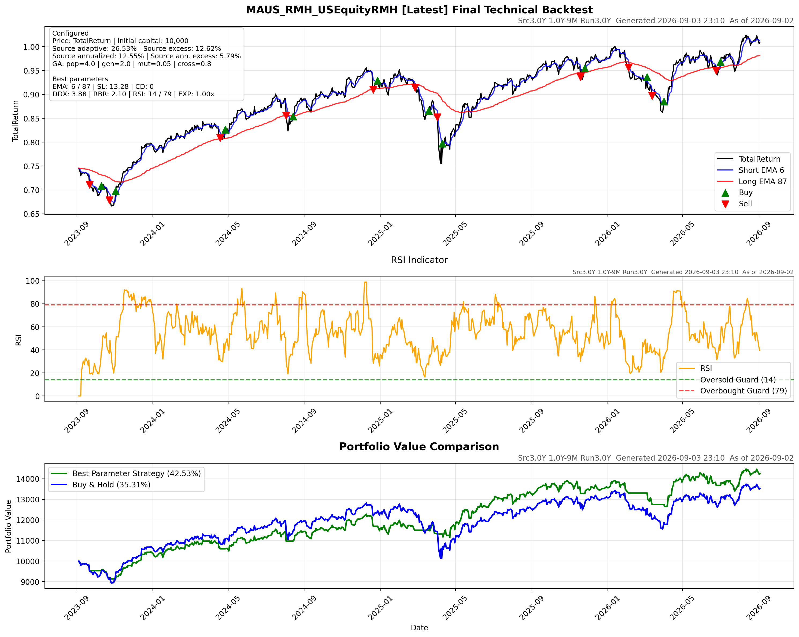

- Total return
- +42.53%
- Buy & hold ann.
- +10.62%
- Excess ann.
- +1.94%
- Sharpe
- 1.02
FUND BACKTEST · LATEST RANK #4
BUY / HOLDUS Equity
MAUS · Full strategy evidence and replay diagnostics
- Total return
- +25.24%
- Buy & hold ann.
- +6.76%
- Excess ann.
- +5.21%
- Sharpe
- 0.95
- Total return
- +26.53%
- Buy & hold ann.
- +6.76%
- Excess ann.
- +5.79%
- Sharpe
- 0.98
Best valid completed historical run
SELECTED STRATEGY
Parameters and run quality
VISUAL EVIDENCE
Backtest charts
Full local history replay with signals, RSI and portfolio value.

Open full-size chart ↗Chart unavailable
This run did not produce the selected chart asset.